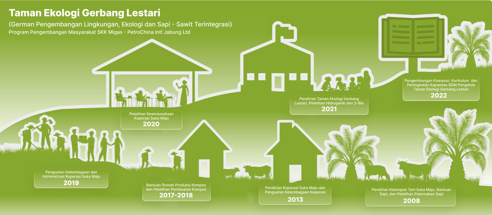

Tahun 2022
Penguatan Sekolah Lapang Ramah Lingkungan dan diberi nama Gerbang Lestari (Gerakan Pengembangan Lingkungan, Ekologi dan Sapi Sawit Terintegrasi). Pembuatan Kurikulum, Peningkatan Kapasitas Instruktur dan alat peraga pendidikan.